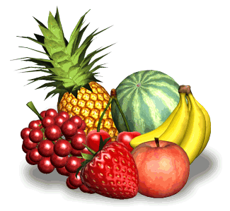
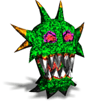
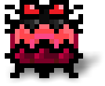

Dans
la génération
4 bits, Kubi est sans défense. À partir de la génération 8 bits,
il peut exécuter une attaque spéciale pour atomiser tous les
monstres des environs. Cela permet à Kubi de se sortir de
situations épineuses et de gagner plein de points.
Le nombre d'attaques spéciales est limité.
Fruits
Dans chaque niveau, plein de
fruits délicieux cachés apparaissent les uns après les autres, à
certains moments. Chaque fois qu'il avale un fruit, Kubi fait
grimper son niveau de vitamines et fait exploser ton score.

Monstre

Tous les niveaux sont peuplés de méchants monstres qui
retiennent prisonniers les amis du pauvre petit Bit Boy.
Heureusement, ces monstres ne sont pas tous des lumières et ils
ne savent pas toujours comment te trouver. Mais fais attention
car quand un monstre te fonce dedans,
tu perds une vie.
Vies et Continue
Quand
tu perds une vie, tu recommences à l'endroit où tu as rencontré
le monstre pendant que les autres monstres regagnent la station.
Les amis déjà sauvés se trouvent en sécurité.
Si
tu perds toutes tes vies, tu
peux sélectionner « Continue » pour recommencer le niveau à zéro.
Lorsque tu as libéré tous
les petits
Bit Boys, tu restes prisonnier encore
5 secondes dans le niveau. Profite de ce laps de temps pour
récupérer des fruits tout en évitant les monstres.